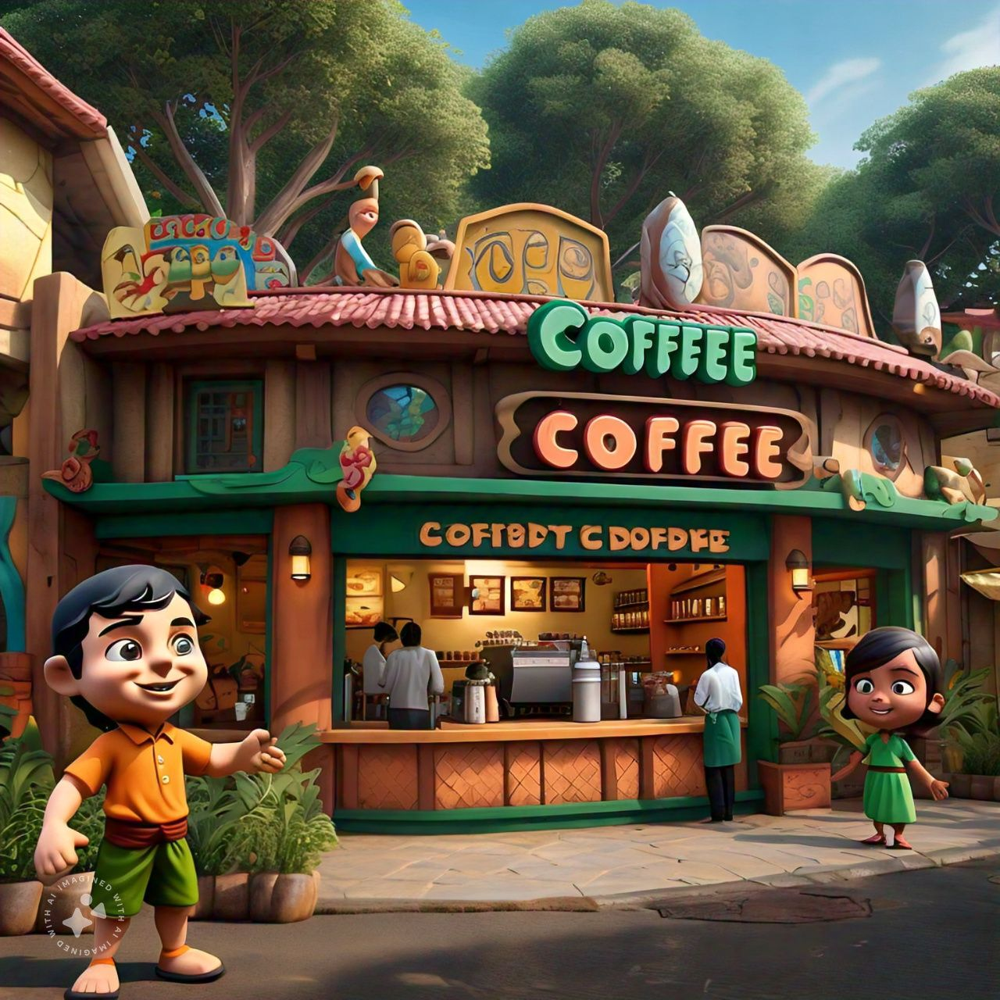
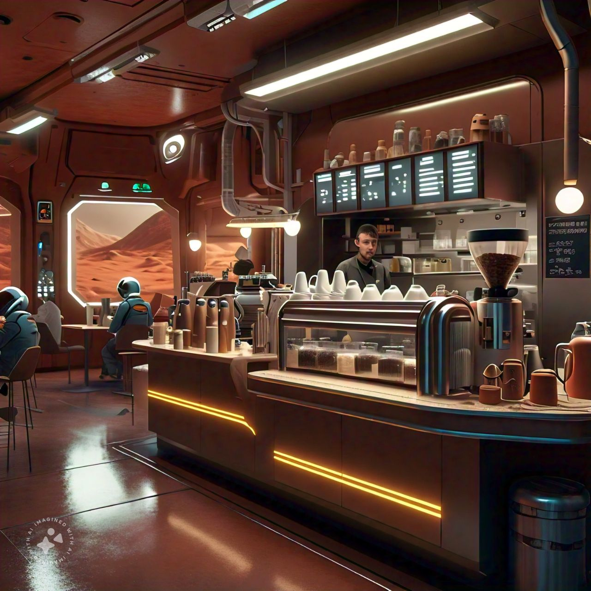

Our Outlets are in 3different Places
|

|
Our coffee shop outlet in Dholakpur has quickly become a cherished spot in the community. Nestled in the heart of the town, it offers a warm and inviting ambiance with its rustic decor and cozy seating. Our team of friendly baristas takes pride in serving high-quality coffee, crafted from locally sourced beans, ensuring every cup is a testament to both our dedication and the rich flavors of the region |
|---|---|
|

|
Our coffee shop outlet on Mars is a groundbreaking blend of innovation and comfort, offering an unparalleled experience in the vast expanse of the Red Planet. Located within the state-of-the-art Mars Colony Habitat, the shop provides a warm and inviting refuge for astronauts and settlers alike. Its modern, sleek design incorporates panoramic windows that offer breathtaking views of the Martian landscape, creating a unique backdrop for every visit. Our baristas, trained to work in the reduced gravity environment, expertly craft each cup using specially adapted equipment, ensuring the highest quality beverages even millions of miles from Earth.Our coffee shop outlet on Mars is a groundbreaking blend of innovation and comfort, offering an unparalleled experience in the vast expanse of the Red Planet. Located within the state-of-the-art Mars Colony Habitat, the shop provides a warm and inviting refuge for astronauts and settlers alike. Its modern, sleek design incorporates panoramic windows that offer breathtaking views of the Martian landscape, creating a unique backdrop for every visit. Our baristas, trained to work in the reduced gravity environment, expertly craft each cup using specially adapted equipment, ensuring the highest quality beverages even millions of miles from Earth. |

|
Nestled in the charming streets of The North, a quaint coffee shop has become a beloved sanctuary for locals and travelers alike. This cozy establishment, adorned with rustic wooden beams and vintage decor, exudes a warm and inviting atmosphere. The rich aroma of freshly ground coffee beans fills the air, enticing visitors to savor each sip of their meticulously crafted brews. Whether it's the expertly pulled espresso, the creamy cappuccinos, or the unique seasonal specialties, every cup is a testament to the baristas' passion and skill. |